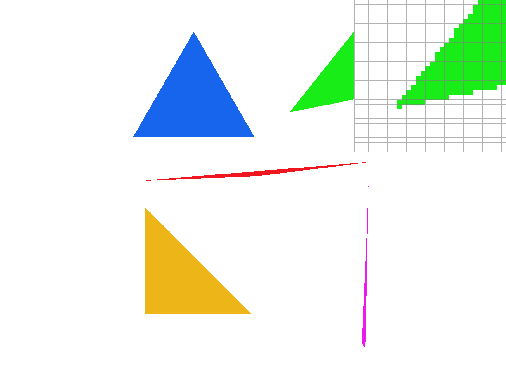
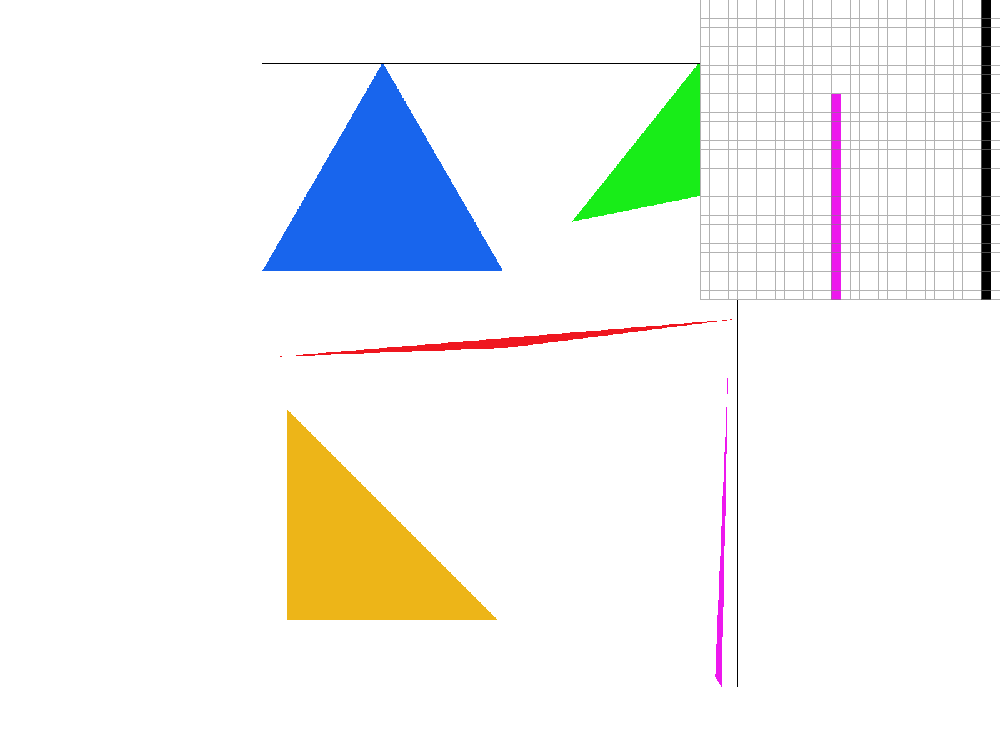
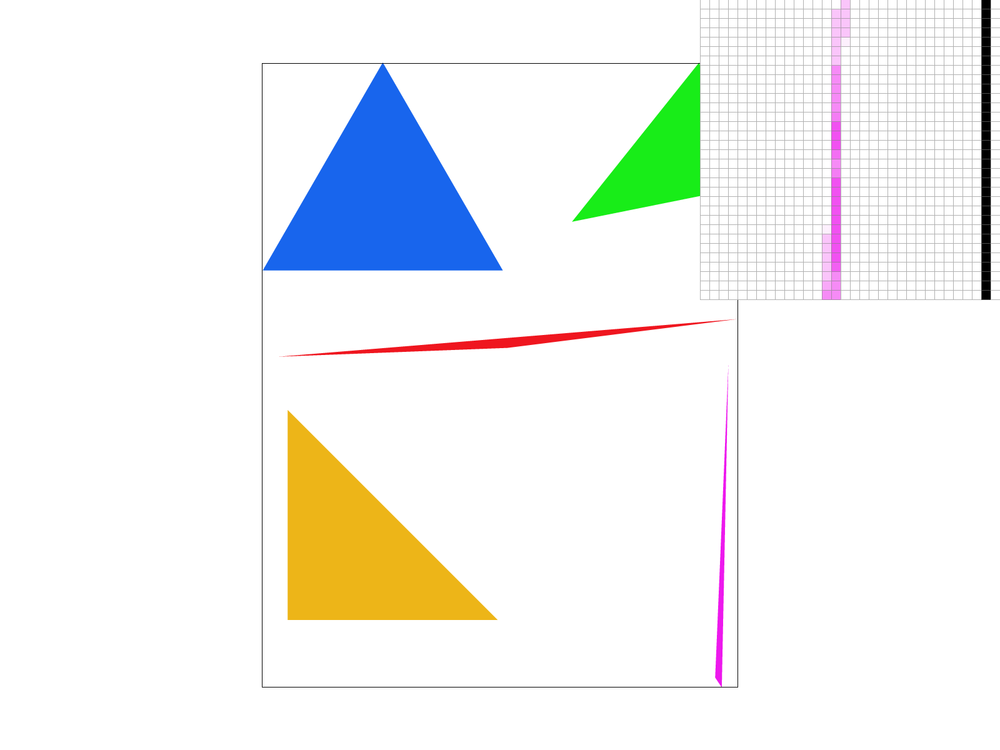
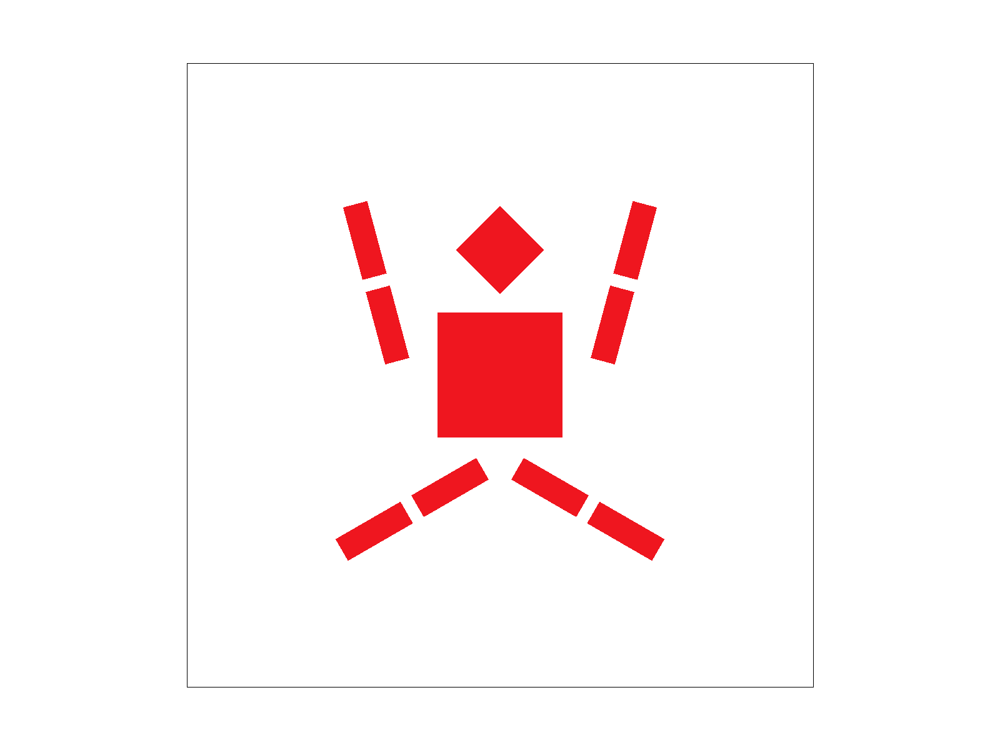
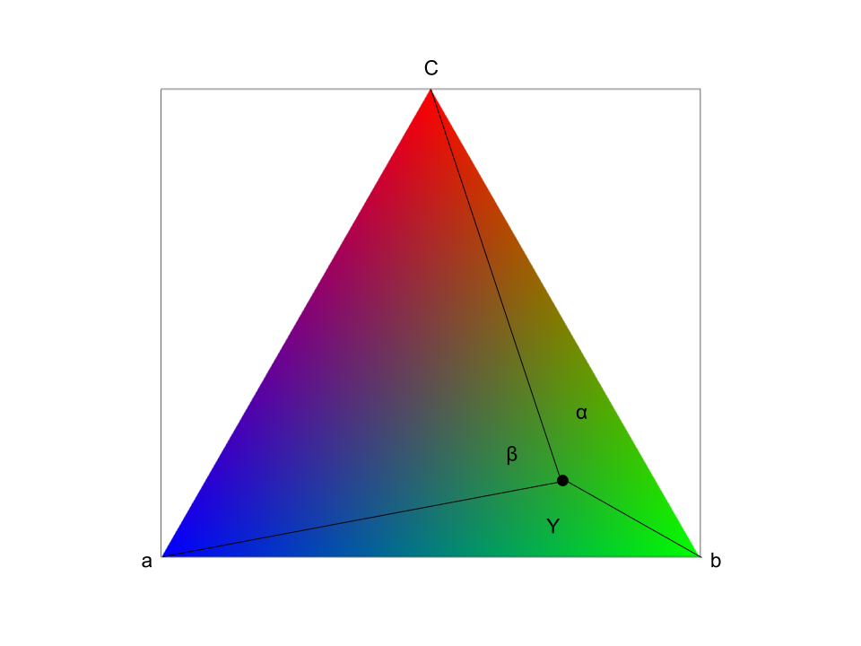
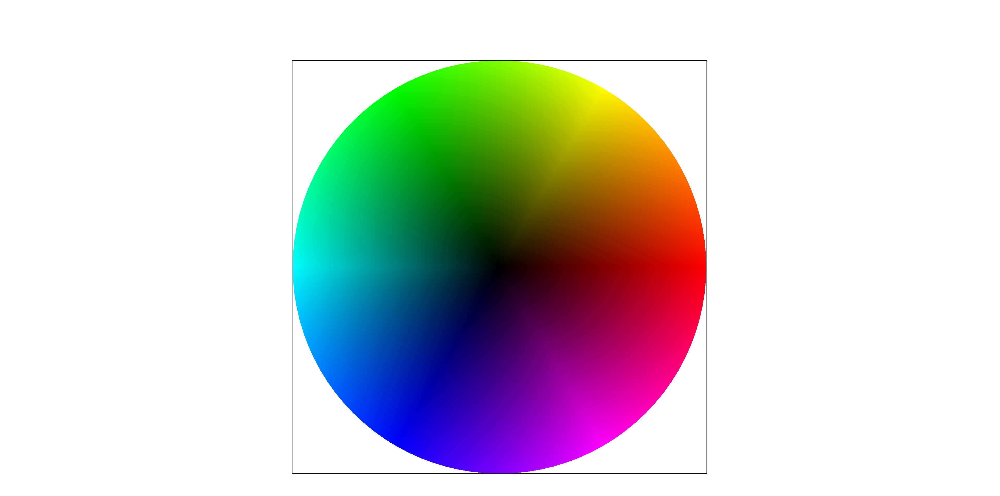
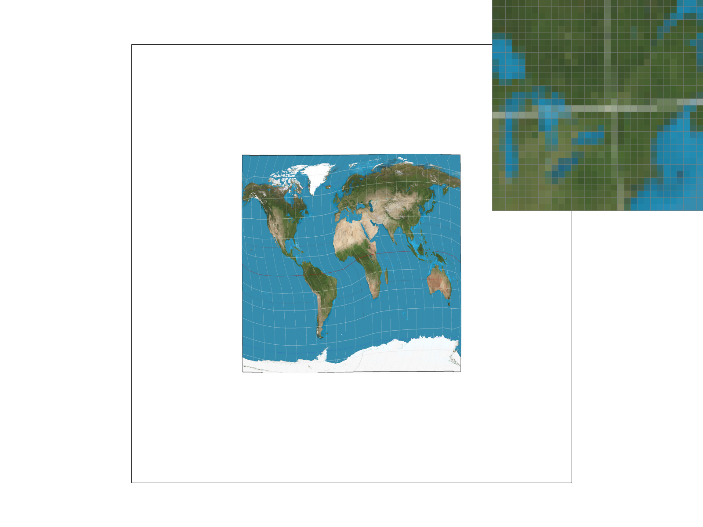
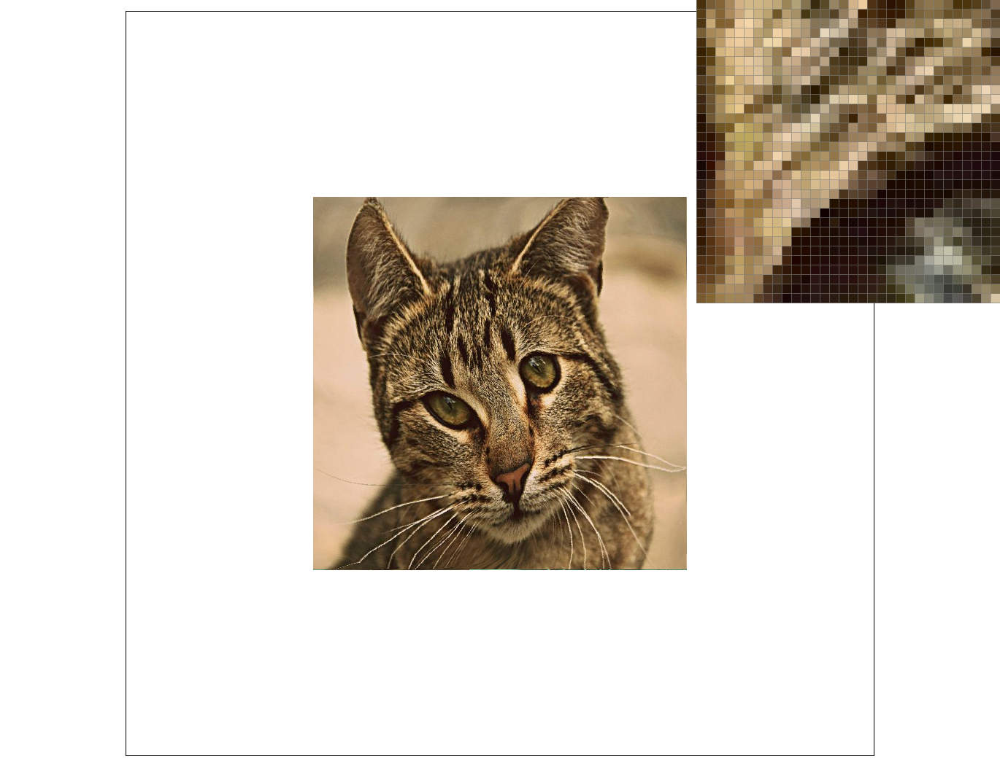

How do we rasterize triangles?
We rasterize triangles using the line test method.
First we have to determine if the triangle’s points are clockwise or counterclockwise. A simple way to do this is to use the shoelace theorem. By calculating the signed area of the triangle, if the area is positive or negative it allows us to determine if it is counterclockwise or clockwise respectively.
Then, for our initial approach, we find the bounding box of the triangle. We calculate this by finding the min and max x and y values.
Then, we define the three edge vectors which define a triangle. We do this by subtracting point b from point a, point c from point b, and point a from point c using vector math.
Because we draw triangles which are either clockwise or counterclockwise, we flip the vectors if the signed area is negative (counterclockwise) to make the vectors clockwise.
Now, we iterate from the minimum x to the maximum x and the minimum y to the maximum y.
We add 0.5 to x and y to make it in the center of the box. For each point we iterate through, we determine if it is inside the triangle using a line test.
For each edge vector, we turn it 90 degrees to the left. We do this by defining the vector as {-y, x}. For the point vector, we subtract the coordinate vector (defined as the vector from the point to the origin) from the origin of the edge vector. Then, we take the dot product of these two vectors. This projects the point vector onto the perpendicular vector. If the value is greater than or equal to zero, this means that the point is inside the triangle or on the edge.
If for each edge vector, the dot product is greater than zero, we draw the point by filling the pixel with the correct color.
How is this no worse than an algorithm used to check the bounding box of the triangle?
This algorithm is exactly the same as one that checks each sample being within the bounding box of the triangle, because by taking the minimum and maximum values for x and y, we create a bounding box. The bounding box we created is the minimum sized rectangle which can fit the triangle. Therefore, because we only iterate through our bounding box once, it is no worse than an algorithm that checks each sample within the bounding box of the triangle.
|

|
To make supersampling work, we first needed to create a new sample buffer. We scale the new sample buffer by sqrt(sample_rate) in both the x and y directions. This means that we take a total of sample_rate more samples per pixel.
Our new sample buffer is width*sqrt(sample_rate) wide and height*sqrt(sample_rate) tall.
Now, all we need to do is render the triangle into this new buffer. My method works by scaling the triangle by sqrt(sample_rate) in both directions. We do this by multiplying the x and y dimensions by sqrt(sample_rate) for the edge vectors and the coordinates. Then, using the same line tests as before, we determine if the center of a pixel is inside the triangle.
This triangle is sqrt(sample_rate) larger than the original implementation.
To render the sample_buffer to the framebuffer, we then take the average for each pixel by adding up all the rgb values for each color in a sqrt(sample_rate) by sqrt(sample_rate) grid around a pixel.
This process is useful because by using the intensity of colors, we are able to approximate sharper edges than is possible using the existing grid. Supersampling allows us to calculate the color value of edges or high frequency signals by creating a smaller grid that we use to find the colors of a larger grid. We used supersampling to antialias our triangle by creating a smaller grid than our pixel grid, and sampling there, then averaging our samples to determine a color to represent in our larger pixel grid.
|

|
|

|
|

|
How do Barycentric coordinates work?
Barycentric coordinates are a different coordinate system for triangles. The way that barycentric coordinates work is that they are defined by the coefficients α, β, or γ from vertex A, B, and C. Instead of being purely based on geometric distance, they are based on the proportional value formed from the area of the sub-triangle divided by the total triangle area.
|

|
The image above explains how α is proportional to the area of the triangle created opposite of the A vertex. Similarly, β is proportional to the area of the triangle opposite of the B vertex. And γ is proportional to the area of the triangle opposite of the C. We calculate the area of each of these triangles, then divide by the total triangle area to get the coordinate values for α, β, and γ. This provides a coordinate system for the triangle, based on the proportional areas of these three triangles.
|

|
How does pixel sampling work? What are the different pixel sampling methods?
Pixel sampling involves converting the barycentric coordinates of a triangle into UV coordinates. Texture maps use these UV coordinates to map textures to points on the triangle. Then, we sample from the texture map, either by using the nearest texel (nearest-neighbor sampling) or by bilinearly interpolating between the four closest texels (bilinear interpolation).
My implementation of barycentric coordinates starts with the same triangle renderer as in previous implementations. However, instead of outputting a color, we now aim to apply a texture. Therefore, we convert barycentric coordinates to UV coordinates using the following equations:
Given the UV coordinates for each vertex of the triangle, the u coordinate is calculated as u = a*u0 + b*u1 + y*u2, and the v coordinate is calculated as v = a*v0 + b*v1 + y*v2. Here, a, b, and y represent the barycentric coordinates. This conversion provides the UV coordinates needed to sample the texture map. We then scale these UV coordinates by the width and height of the texture map respectively.
Then, we can sample using the closest texel by rounding to the nearest whole UV coordinate. Alternatively, we can bilinearly interpolate by calculating the proportional distances of the closest left and right texels, and average them. We can then linearly interpolate those two texels vertically, by calculating the vertical proportional distance and multiplying. This provides us with the color of the pixel.
|
|

|
|
|
|
What are the differences?
We can see that nearest sampling is much worse in this example. We see that it creates aliasing and completely ignores the existance of the white line. Bilinear sampling has a clearer more consistent white line. We can compare this to sampling by 16. We see that the bilinear sample with 1 sample is very close to 16 sample rate, nearing sampling. This shows how billinear is very effective in this case. We can also see how 16 sampling with bilinear sampling is even better, with more consistent white lines and less blockiness.
Why is there a large difference between the two methods and why?
Bilinear sampling and nearest sampling are different because nearest sampling will only sample one pixel, while bilinear sampling will sample 4 pixels and take a linearly interpolated average. This means that bilinear sampling is at least 4 times as computationally expensive. However, it performs better on high frequency signals, making a smoother transition and preventing aliasing. Nearest sampling will do better where sharpness is favored. There will be a large difference between the two when there are high frequency signals being sampled, because taking multiple samples means there is less aliasing/artifacts created when our sample rate is lower than the Nyquist frequency. Bilinear will look better when the sample rate is less than the Nyquist frequency.
What is level sampling?
Level sampling works by using different resolutions of the texture. Using a formula, we can calculate the level from which we should sample. The formula calculates the largest change in UV coordinates when taking a sample-rate-sized step in the original coordinates in both x and y dimensions to determine the appropriate level. We take the log base 2 of the larger of the changes in u and v, and use that as the appropriate level.
What are the tradeoffs of speed, memory usage, and antialiasing power between the various methods of pixel sampling, level sampling, or the number of samples per pixel?
The different sampling techniques have various tradeoffs between speed, memory usage, and antialiasing power. The most computationally expensive, highest memory usage, and most capable technique is supersampling. By sampling a higher resolution grid, supersampling samples the original signal with a higher sample rate, reducing aliasing through brute force by increasing the Nyquist frequency, which determines the highest frequency signal that can be represented without aliasing. Due to this method, it is the most universal and highly effective. However, it requires us to store a higher resolution sample buffer, and requires many more expensive samples. Pixel sampling is cheaper than supersampling. Pixel sampling doesn’t require more memory, however, it requires more computation. Bilinear interpolation requires access to 4 different pixels to calculate one pixel. This has a moderate antialiasing effect, allowing us to take a linearly interpolated average of the surrounding pixels. It is effective with textures, but adds smearing and blurs the picture. Level sampling is the least expensive technique. By using prefiltered mipmaps and sampling from them, this reduces the high frequency signals in textures and provides antialiasing. This is the cheapest technique, requiring only one or two samples, and only requires additional memory usage to store mipmaps, which is proportionally small. However, the antialiasing power is limited. Level sampling is only limited to texture based rendering, and, like pixel sampling, is primarily used with textures.
|

|
|
|
|
|